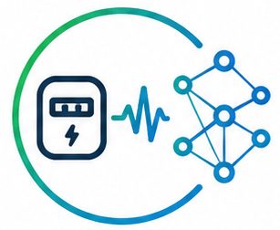

EnergyBench Dataset
Large-scale smart meter repository used for pretraining and benchmarking.


EnergyFMEnergy analytics powers critical applications including load forecasting, anomaly detection, demand response, and appliance characterization. Existing task-specific models often struggle to generalize across building types, regions, and operational patterns.
EnergyFM introduces a unified ecosystem comprising:
Large-scale smart meter repository used for pretraining and benchmarking.
168-hour context → 24-hour horizon setting metrics calculation.
Rigorous operational tests executed directly against the standard LEAD 1.0 benchmark specifications.
Downstream identification tests verified across target appliance characterization datasets.
Performance comparison across forecasting profiles, anomaly tracking loops, and appliance classification configurations.
Table 1. Comparative forecasting split monitoring OOD vs ID absolute errors.
Table 2. Precision, Recall, and F1 performance indices for outlier classification.
Table 3. Downstream tier ratings for structural home appliance identification.
Finding 1. Target Pretraining Advantages.
Energy-specific platform pretraining yields prominent accuracy upgrades across deep forecasting runs.
Finding 2. Zero-Shot Robustness.
Energy-TTM achieves remarkably high baseline zero-shot data transfers without requiring downstream localized loops.
Finding 3. Multi-Domain Space Maps.
Energy-TSPulse captures highly transferable latent representations across complex temporal configurations.
git clone https://github.com/energyfms/notebooks.git
cd notebooks
pip install -r requirements.txt
@article{energyfm2026,
title={EnergyFM: Pretrained Models for Energy Meter Data Analytics},
author={Arjunan, Pandarasamy and Srivastava, Naman and Kumar, Kajeeth and Jati, Arindam and Ekambaram, Vijay and Dayama, Pankaj},
journal={arXiv preprint},
year={2026}
}